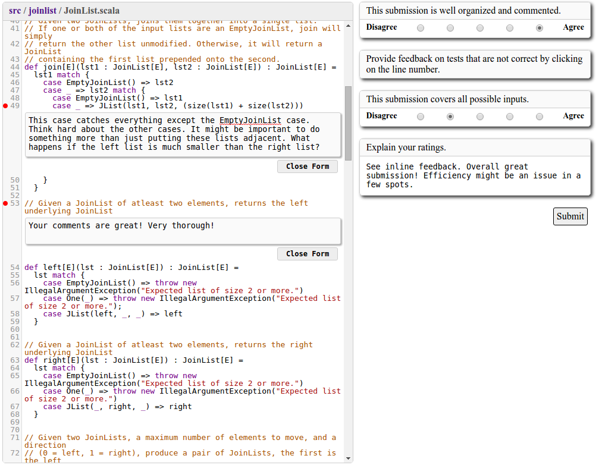
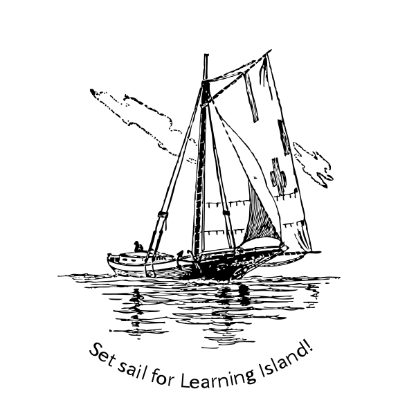

Captain Teach
Peer review is a key element of professional programming practice that is sometimes overlooked in computer science education. In addition, learning to review code (and to be reviewed) exposes students to new ideas and perspectives and helps them appreciate that computing is a communal activity and not an individualistic job. Peer review is also a form of contributing student pedagogy and enables students to quickly get diverse feedback on their work, even in large classes.
However, individual courses and assignments may have very different peer review requirements from class to class and even from assignment to assignment. For example, consider th following scenarios:
- The instructor releases a homework assignment asking students to implement a queue data structure. After students submit their work, the instructor has each student provide written reviews of two other students’ work. Students can read their reviews, incorporate feedback, and re-submit their work for final grading.
- Students are working on a large software engineering project over several weeks. It is infeasible and unhelpful to review the final project all at once. Instead, the instructor sets several smaller milestones: e.g., the students first review design documents, then test suites, and finally select pieces of the implementation.
- The instructor is running a 90 minute programming lab and wants students to switch between writing and reading each others’ code every 15 minutes. The goal is to have students quickly disseminate their ideas so that everyone can advance and finish the lab in the allotted time.
We refer to these scenarios as workflows and it is easy to imagine other kinds of assignments that require very different workflows. A new workflow may have any number of milestones, it may ask students to use a new rubric for reviews, it may group students in different ways, and so on. A peer review tool that delivers a single workflow is simply not sufficient for the wide variety of assignments an instructor may wish to use.
Captain Teach is a peer review platform for computer science classrooms. It provides the facilities to create in-flow peer review workflows to meet the needs of various assignments and is accessible through the browser. The server itself has been packaged as a Docker container with very modest requirements and runs easily on a system with 1 GB RAM. Additionally, we've carefully engineered Captain Teach to keep its data secure. For example, authentication is out-sourced to a third party OpenID provider such as Google. For institutions that us Google Apps for Education, this approach is seamless and students can login with their institutional accounts.
What is In-Flow Peer Review?
Peer-review is a valuable tool that helps both the reviewee, who receives feedback about his work, and the reviewer, who sees different potential solutions and improves her ability to critique work. In-flow peer-review (IFPR) is peer-review done while an assignment is in progress. Peer-review done during this time is likely to result in greater motivation for both reviewer and reviewee.
Check out the working group paper on In-Flow Peer Review here.
Creating a Workflow
Captain Teach provides an easy to use point and click interface for defining workflows for your assignments. Each assignment is broken into a sequence of milestones which represents a student submission followed by peer review tasks which must be completed before the student can proceed to the next milestone.
Peer Review Interface
While performing peer review, students have access to a GitHub-inspired file browser which provides syntax highlighting and the ability to leave in-line feedback. Additionally, an instructor-provided review rubric is always present to help guide the review process.

Monitoring Progress
A happy consequence of in-flow peer review is that it forces students to work on intermediate milestones for the duration of an assignment; they cannot scramble to finish everything the night before it is due. Captain Teach provides a dashboard for instructors to monitor the progress of the whole class as well as individual students. The instructor can quickly check that students are engaged and completing milestones on time, and debug any issues that may arise.
The assignment overview displays the number of students who need to submit to each milestone, the number of completed reviews, and the number of students who have actually viewed their feedback. If these numbers are low, it indicates that students are not engaged. It could be that they've received several poor-quality reviews or that they received reviews that were too late to be useful and are now disinterested in the peer review process. By discovering these issues early an instructor is able to respond to the needs of their students.
In addition to a quick overview, the dashboard provides a detailed view of each milestone. This view provides staff with quick access to individual submissions and reviews. By spending a few minutes browsing through student submissions on an early milestone, staff may notice a common error among the submissions that should be addressed. For example, an assignment write-up may have been unintentionally misleading or simply incorrect. Similarly, a quick glance at several student reviews might reveal a rubric question is not having the desired effect. These kinds of errors can be swiftly corrected due to the visibility that Captain Teach provides. We have found this early feedback very useful in our courses.
Start Using Captain Teach
If you would like to use Captain Teach in your classroom, do not hesitate to contact us! We would love to hear how you plan to use Captain Teach and help set it up. Send inquiries to jcollard@cs.umass.edu.
Captain Teach's source code is available on GitHub.
